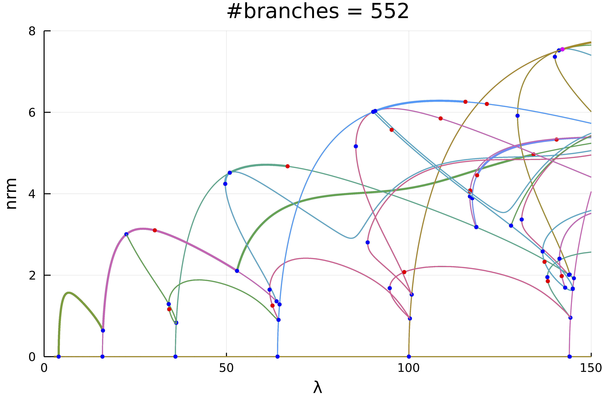

🟢 1d Kuramoto–Sivashinsky equation
This is work in progress... In particular, there is a combinatorial explosion that I need to address.
The following example is exposed in Evstigneev, Nikolay M., and Oleg I. Ryabkov. Bifurcation Diagram of Stationary Solutions of the 2D Kuramoto-Sivashinsky Equation in Periodic Domains. Journal of Physics: Conference Series 1730, no. 1 2021
We study the 1d Kuramoto–Sivashinsky equation with Dirichlet boundary conditions:
\[\left(2 u u'+ u''\right)+2\lambda u^{(4)}=0,\ u(0)=u(\pi)=0.\]
We discretize the problem by using $u(x)=\sum_{k=1}^{\infty} u_{k} \sin (k x)$ which gives
\[\left(2\lambda k^4-k^2\right) u_{k}+\frac{k}{2}\left(\sum_{l=1}^{\infty} u_{k+l} u_{k}-\frac{1}{2} \sum_{l+m=k} u_{l} u_{m}\right)=0.\]
This is a good example for the use of automatic bifurcation diagram as we shall see. Let us first encode our problem
using Revise, LinearAlgebra, Plotsusing ForwardDiffusing BifurcationKitconst BK = BifurcationKitBK.set_plot_backend!(BK.BK_Plots()) # hide# we use this library for plottingusing ApproxFunfunction generateLinear(n) Δ = [-k^2 for k = 1:n] return Δ, Δ.^2endfunction Fks1d(a, p) (;Δ, Δ2, λ, N) = p out = (2λ) .* (Δ2 .* a) out .+= (Δ .* a) @inbounds for l=1:N for m=1:N if 0 < l+m <= N out[l+m] += l*a[l]*a[m] end if 0 < m-l <= N out[m-l] += l*a[l]*a[m] end if 0 < -(m-l) <= N out[l-m] -= l*a[l]*a[m] end end end out .*= -1 return outendHaving defined the model, we chose parameters:
N = 50Δ, Δ2 = generateLinear(N)par_ks = (Δ = Δ, Δ2 = Δ2, λ = 0.75, N = N)# we define a Bifurcation Problemprob = BifurcationProblem(Fks1d, zeros(N), par_ks, (@optic _.λ), record_from_solution = (x, p; k...) -> (s = sum(x), u2 = x[3], nrm = norm(x)), plot_solution = (x, p; kwargs...) -> plot!(Fun(SinSpace(), x) ; kwargs...), )and continuation options
optn = NewtonPar(tol = 1e-9, max_iterations = 15)optc = ContinuationPar(p_min = 1/150., p_max = 1., max_steps = 700, newton_options = optn,dsmax = 0.01, dsmin = 1e-4, ds = -0.001, nev = N, n_inversion = 8,max_bisection_steps = 30, plot_every_step = 50)kwargscont = (verbosity = 2, plot = true, normC = norm)Computation of the bifurcation diagram
# function to adapt continuation option to recursion levelfunction optrec(x, p, l; opt = optc) level = l if level <= 2 return setproperties(opt; dsmax = 0.005, max_steps = 2000, detect_loop = true, n_inversion = 6) else return setproperties(opt; dsmax = 0.005, max_steps = 2000, detect_loop = true, n_inversion = 6) endend# we now compute the bifurcation diagram# that is the connected component of (0,0)diagram = @time bifurcationdiagram(prob, PALC(), 4, optrec; kwargscont..., verbosity = 0, )Plotting the result can be done using
plot(diagram; code = (), plotfold = false, markersize = 3, putspecialptlegend = false, plotcirclesbif = true, applytoX = x->2/x, vars = (:param, :nrm), labels = "", xlim = (0,150), ylim=(0,8))title!("#branches = $(size(diagram))")